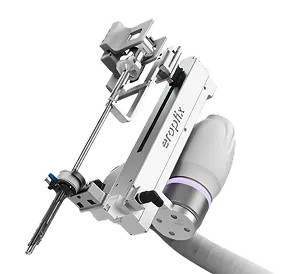

EROP EROPTIX
Surgery-assisted cooperative robot system from EROP, distributed in the Philippines by K-Pick Trading Corp. K-Pick Trading Corp supplies this Korean medical device for hospitals, clinics, surgical teams, resellers, and healthcare procurement officers in the Philippines.

Models and specifications
- ERT-012 cooperative robot
- ERT-011 end-effector
- ERT-005 joystick
- ERT-009 electronic cart
- TS-11R robot trocar
Manufactured by EROP (Korea). Distributed in the Philippines by K-Pick Trading Corp, a PH FDA-licensed medical device distributor. See EROP certifications.